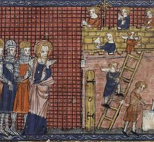

History and legends of Saint Valentine
Source: Wikipedia.org
History
Numerous early Christian martyrs were named Valentine.
The Valentines honored on February 14 are Valentine of Rome (Valentinus presb. m. Romae)
and Valentine of Terni (Valentinus ep. Interamnensis m. Romae).
Valentine of Rome was a priest in Rome who was martyred in 269
and was added to the calendar of saints by Pope Galesius
in 496 and was buried on the Via Flaminia.
The relics of Saint Valentine were kept in the Church
and Catacombs of San Valentino in Rome,
which "remained an important pilgrim site throughout
the Middle Ages until the relics of
St. Valentine were transferred to the church of Santa Prassede
during the pontificate of Nicholas IV".
The flower-crowned skull of Saint Valentine is exhibited in
the Basilica of Santa Maria in Cosmedin, Rome.
Other relics are found at Whitefriar Street Carmelite Church
in Dublin, Ireland.
Valentine of Terni became bishop of Interamna (modern Terni)
and is said to have been martyred during
the persecution under Emperor Aurelian in 273.
He is buried on the Via Flaminia,
but in a different location from Valentine of Rome.
His relics are at the Basilica of Saint Valentine
in Terni (Basilica di San Valentino).
Jack B. Oruch states that "abstracts of the acts of the two saints
were in nearly every church and monastery of Europe."
The Catholic Encyclopedia also speaks of a third saint named Valentine
who was mentioned in early martyrologies under date of February 14.
He was martyred in Africa with a number of companions,
but nothing more is known about him.
Saint Valentine's head was preserved in the abbey of
New Minster, Winchester, and venerated.
February 14 is celebrated as St. Valentine's Day in
various Christian denominations;
it has, for example, the rank of 'commemoration' in the
calendar of saints in the Anglican Communion.
In addition, the feast day of Saint Valentine is also given in
the calendar of saints of the Lutheran Church.
However, in the 1969 revision of the Roman Catholic Calendar of Saints,
the feast day of Saint Valentine on February 14 was removed
from the General Roman Calendar and
relegated to particular (local or even national)
calendars for the following reason:
"Though the memorial of Saint Valentine is ancient,
it is left to particular calendars, since,
apart from his name, nothing is known of Saint Valentine
except that he was buried on the Via Flaminia on February 14."
The feast day is still celebrated in Balzan (Malta) where relics of the saint are claimed to be found, and also throughout the world by Traditionalist Catholics who follow the older, pre-Second Vatican Council calendar.
In the Eastern Orthodox Church, St. Valentine is recognized on July 6, in which Saint Valentine, the Roman presbyter, is honoured; in addition, the Eastern Orthodox Church observes the feast of Hieromartyr Valentine, Bishop of Interamna, on July 30.
Legends
J.C. Cooper, in The Dictionary of Christianity, writes that Saint Valentine was
"a priest of Rome who was imprisoned for succouring persecuted Christians."
Contemporary records of Saint Valentine were most probably destroyed during
this Diocletianic Persecution in the early 4th century.
In the 5th or 6th century, a work called Passio Marii et Marthae published
a story of martyrdom for Saint Valentine of Rome, perhaps by borrowing tortures
that happened to other saints, as was usual in the literature of that period.
The same events are also found in Bede's Martyrology, which was compiled in the 8th century.
It states that Saint Valentine was persecuted as a Christian and interrogated
by Roman Emperor Claudius II in person.
Claudius was impressed by Valentine and had a discussion with him,
attempting to get him to convert to Roman paganism in order to save his life.
Valentine refused and tried to convert Claudius to Christianity instead.
Because of this, he was executed.
Before his execution, he is reported to have performed a miracle by healing Julia,
the blind daughter of his jailer Asterius.
The jailer's daughter and his forty-six member household
(family members and servants) came to believe in Jesus and were baptized.
A later Passio repeated the legend, adding that Pope Julius I built a church over
his sepulchre (it is a confusion with a 4th-century tribune called Valentino who donated land
to build a church at a time when Julius was a Pope).
The legend was picked up as fact by later martyrologies,
starting by Bede's martyrology in the 8th century.
It was repeated in the 13th century, in The Golden Legend.
There is an additional embellishment to The Golden Legend,
which according to Henry Ansgar Kelly, was added centuries later, and widely repeated.
On the evening before Valentine was to be executed,
he is supposed to have written the first "valentine" card himself,
addressed to the daughter of his jailer Asterius,
who was no longer blind, signing as "Your Valentine."
The expression "From your Valentine" was later adopted by modern Valentine letters.
This legend has been published by both American Greetings and The History Channel.
John Foxe, an English historian, as well as the Order of Carmelites,
state that Saint Valentine was buried in the Church of Praxedes in Rome,
located near the cemetery of Saint Hippolytus.
This order says that according to legend,
"Julia herself planted a pink-blossomed almond tree near his grave.
Today, the almond tree remains a symbol of abiding love and friendship."
Another embellishment suggests that Saint Valentine performed clandestine
Christian weddings for soldiers who were forbidden to marry.
The Roman Emperor Claudius II supposedly forbade this in order to grow his army,
believing that married men did not make for good soldiers.
However, George Monger writes that this marriage ban was never issued
and that Claudius II told his soldiers to take two or three women
for themselves after his victory over the Goths.
According to legend, in order "to remind these men of their vows and God’s love, Saint Valentine is said to have cut hearts from parchment", giving them to these soldiers and persecuted Christians, a possible origin of the widespread use of hearts on St. Valentine's Day.
Saint Valentine supposedly wore a purple amethyst ring,
customarily worn on the hands of Christian bishops with an
image of Cupid engraved in it, a recognizable symbol associated with love
that was legal under the Roman Empire;
Roman soldiers would recognize the ring and ask him to perform marriage for them.
Probably due to the association with Saint Valentine,
amethyst has become the birthstone of February, which is thought to attract love.